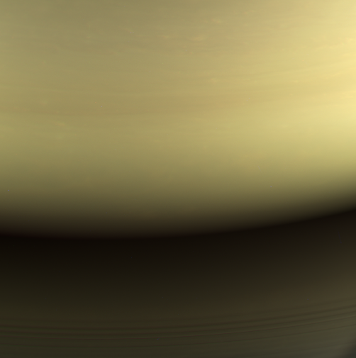
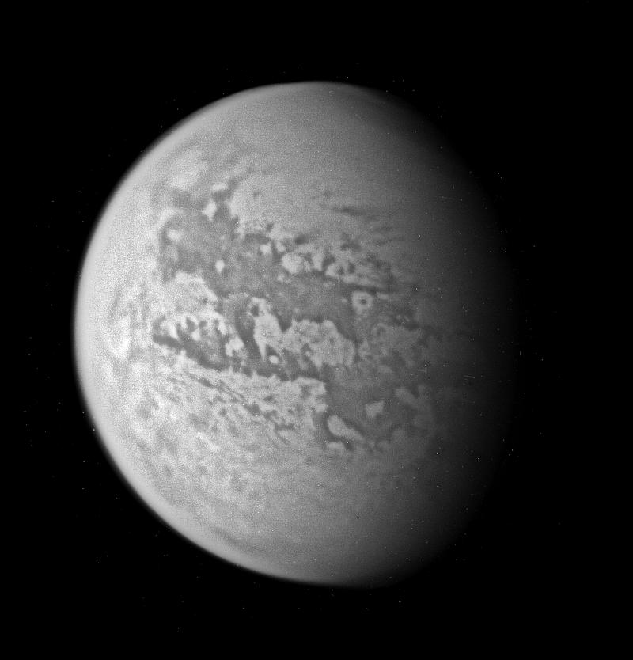
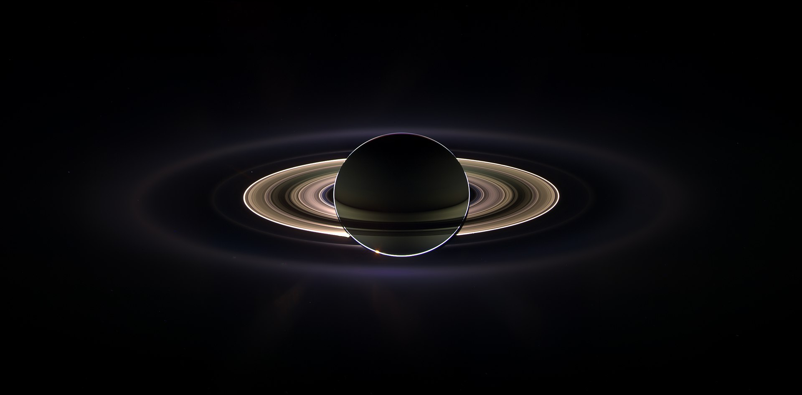

Кассини-Гюйгенс— автоматическая межпланетная станция (АМС), созданная совместно НАСА, Европейским космическим агентством и Итальянским космическим агентством для исследования планеты Сатурн, его колец и спутников.
Комплекс состоял из орбитальной станции «Кассини» и спускаемого аппарата с автоматической станцией «Гюйгенс», предназначенной для посадки на Титан.
«Кассини-Гюйгенс» была запущена 15 октября 1997 года. 1 июля 2004 года после торможения вышла на орбиту спутника Сатурна.
25 декабря того же года спускаемый аппарат отделился от орбитальной станции и 14 января 2005 года вошёл в атмосферу Титана, обеспечив мягкую посадку автоматической станции на его поверхность.
Первоначально миссия была запланирована до 2008 года, однако впоследствии продлена до лета 2010 года. 3 февраля 2010 года было объявлено о дальнейшем продлении программы до 2017 года.
4 апреля 2017 года Лаборатория реактивного движения объявила о грядущем завершении миссии «Кассини» 15 сентября 2017 года. Завершающий этап программы начался 26 апреля.
Космический аппарат выполнил несколько коррекций своей орбиты вокруг Сатурна и 15 сентября 2017 года вошёл в его атмосферу.
Орбитальная станция «Кассини» — первый искусственный спутник Сатурна. Автоматическая станция «Гюйгенс» — первый космический аппарат, который совершил мягкую посадку во Внешней Солнечной системе.
В итоге деятельности проекта на Землю было передано 635 ГБ данных, 453 048 снимков, выполнено 162 пролёта около спутников Сатурна, опубликовано 3948 научных публикаций.
Хроника полёта
1997 год:
15 октября — старт аппарата (08:43 UTC), с мыса Канаверал (Флорида, США) ракетой-носителем Titan 4B/Centaur.
1998 год:
26 апреля — первый манёвр в гравитационном поле Венеры, для набора необходимой скорости.
1999 год:
24 июня — второй манёвр в гравитационном поле Венеры.
18 августа — (03:28 UTC) манёвр в гравитационном поле Земли (мимо Земли корабль прошел со скоростью 69 тысяч км/час).
За час и 20 минут до наибольшего приближения, «Кассини» приблизился на минимальное расстояние к Луне (377 000 км) и сделал серию снимков.
2000 год:
23 января — пролёт мимо астероида (2685) Мазурский (10:00 UTC). Кассини сфотографировал астероид с расстояния 1,6 млн км и оценил его диаметр как 15—20 км.
30 декабря — гравитационный манёвр в гравитационном поле Юпитера. В этот день Кассини приблизился к планете на минимальное расстояние и провёл ряд научных измерений.
Также зонд сделал множество цветных изображений Юпитера, наименьшие видимые детали имеют размер примерно 60 километров в поперечнике.
2001 год:
30 мая — во время перелёта от Юпитера к Сатурну,
была замечена «дымка» в изображениях узкоугольной камеры Кассини (подобное впервые было отмечено на фотографиях звезды Майя из звёздного скопления Плеяд).
2004 год:
11 июня сблизился с Фебой — одной из крупнейших лун Сатурна.
8 октября при близком прохождении возле Титана с помощью инфракрасной камеры был получен снимок образования на Титане, которое по всей видимости является криовулканом.
С помощью спектрометра было установлено, что в истекающих потоках не преобладает водяной лёд. По некоторым версиям купол образован прорывом азотного льда на поверхность.
В ночь с 24 на 25 декабря зонд «Гюйгенс» отделился и начал своё движение к Титану.
2005 год:
14 января зонд Гюйгенс успешно вошёл в атмосферу Титана и совершил мягкую посадку на его поверхность.
2017 год:
22 апреля космическая станция в последний раз облетела Титан и начала сближение с Сатурном, чтобы, совершив 22 оборота по спирали между планетой и её кольцами, 15 сентября войти в атмосферу и на этом завершить свою миссию.
Последний сигнал от Кассини на Земле был получен 15 сентября в 14:55:46 московского времени (11:55:46 UTC).
В действительности вхождение в плотные слои атмосферы и разрушение аппарата произошло на 83 минуты раньше, в 13:31:46 московского времени (10:31:46 UTC), в соответствии с расстоянием между Сатурном и Землёй на этот момент.
Галерея

Последняя фотография, переданная Кассини
Спутник 1 стартовал с космодрома Байконур в Казахстане 4 октября 1957 года.

Изображение Титана, составленное из 4 инфракрасных фотографий, сделанных «Кассини»

Затмение Солнца Сатурном с расстояния 2,2 млн км 15 сентября 2006 года (маленькая яркая точка на 10 часов от планеты возле узкого кольца — Земля)